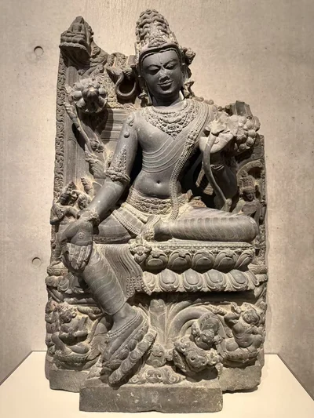
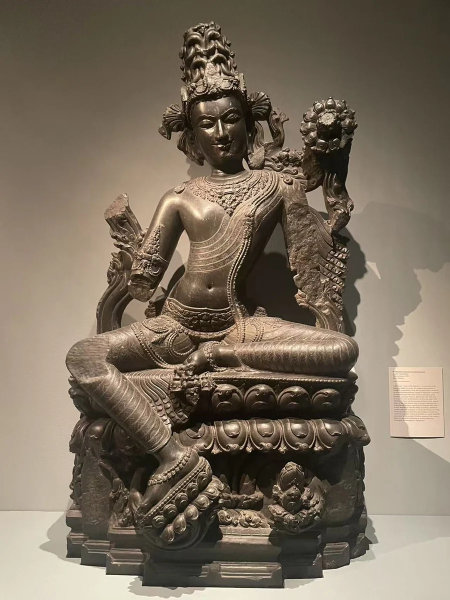

空行观音
金贝尔艺术博物馆
07 / CLOSE LOOKING

世间自在观音的躯干、长垂的腿和层叠莲座，让坚硬石材呈现出松弛而沉静的重量。金贝尔的空行观音则把更多眷属、莲花与供养人纳入背屏。两件作品都值得停下来细看：人物的“优美”与图像的密度，在这里可以同时成立。 [35]
细看：腰身、衣纹与垂足；莲座逐层展开的方式；小型眷属和供养人。

金贝尔艺术博物馆
作品基本资料据现场展签及下列馆方记录整理；文字中的观看描述基于这里的现场照片。